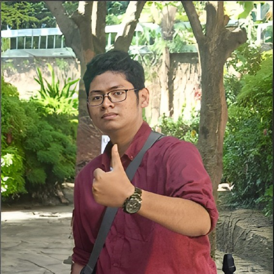

Selamat Datang di Web Pribadi Saya!
Selamat datang di halaman web personal saya! Saya sangat gembira Anda berada di sini untuk menjelajahi profil saya di dunia maya. Di sini, Anda akan menemukan informasi mengenai diri saya, perjalanan hidup yang sedang saya lalui, serta minat dan hobi yang saya miliki. Saya berharap halaman ini dapat memberikan gambaran yang jelas tentang identitas dan aktivitas saya. Terima kasih telah meluangkan waktu untuk mengunjungi halaman saya, dan silakan jelajahi dengan bebas!
Profil Saya
Shaffa Dwiaji Feryansyah Putra
Tentang Saya
Halo! Saya Shaffa Dwiaji, saya adalah seorang mahasiswa Politeknik Negeri Madiun yang
mengampu Program Studi D4 Teknologi Rekayasa Perangkat Lunak. Saat ini saya sedang menempuh
semester 2. Selama perkuliahan yang saya jalani, saya telah mempelajari banyak hal dalam bidang
Rekayasa Perangkat Lunak. Saat ini saya sedang mempelajari beberapa bahasa pemrograman, antara lain
Python, Java, HTML dan CSS.